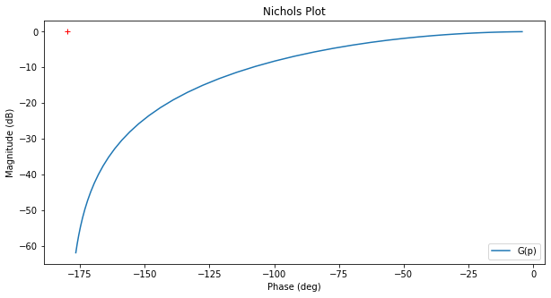

7.1.2 Exercices¶
Exercice 1.¶
Soit la fonction de boucle ouverte d’un processus d’asservissement de position:
On demande de déterminer graphiquement le correcteur proportionnel qui soit capable de minimiser l’erreur de position tout en assurant une marge de phase de 45°. Que vaudra cette erreur de position minimale? Comparez avec l’exercice 1 de la page 5-19 dont l’équation est:
Solution:¶
+ show/hide code1.¶
Tracer la courbe du système en BO dans le dagramme de Black-Nichols.
+ show/hide codeG(p) =
1
----------------------
0.125 s^2 + 0.75 s + 1
Avertissement
Remarque: le ‘p’ de la formule est noté ‘s’ dans la notation anglophone et donc dans les résultats calculés!

Sachant que l’effet du correcteur est de translater la courbe et comme on désire une marge de phase de 45°, il faut mesurer le gain en -135°. On trouve:
+ show/hide codeGain à -135° = -17.56544890480597 dB
Fréquence à -135° = 7.1233661553256065 rad/sec
Dès lors, pour assurer une marge de phase de 45°, on peut translater la courbe de phase de 17.5dB, soit
+ show/hide codeKp = 7.5556606703682965
Marge de phase du système corrigé = 44.99855997300941 °.
En analysant les réponses indicielles du système corrigé et non corrigé, on obtient:
+ show/hide codeSystème non corrigé
-------------------
DC gain = 0.500 => Erreur de position = 50.0%
Rise Time = 0.571 s
Peak amplitude = 0.514
Overshoot = 2.92%
Settling Time = 0.780 s
Système corrigé
---------------
DC gain = 0.883 => Erreur de position = 11.7%
Rise Time = 0.170 s
Peak amplitude = 1.143
Overshoot = 29.5%
Settling Time = 0.946 s
Soit une erreur de position de 12% au lieu de 50% pour le système non corrigé et un temps de montée diminué de 571 ms à 170 ms mais au détriment d’un dépassement de 29.5 %.
2.¶
Le système
possède un pôle à l’origine (classe 1) et présente donc une erreur de position nulle.
+ show/hide codeDC gain = 1.0
=> Erreur de position = 0.0